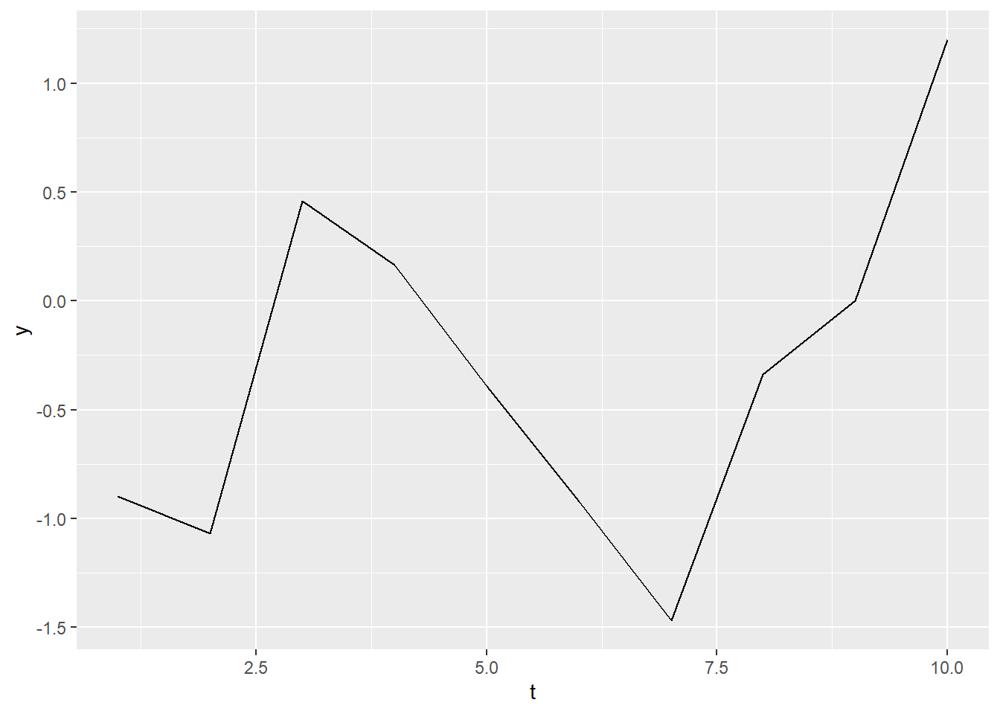
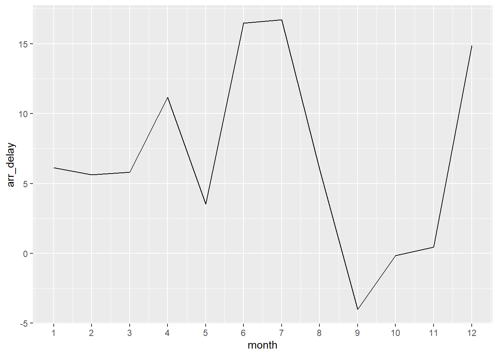
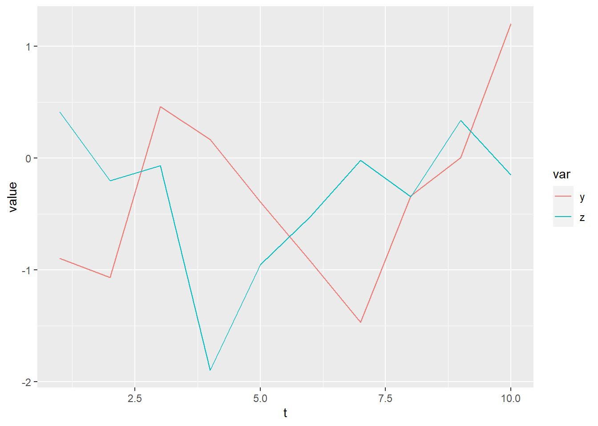
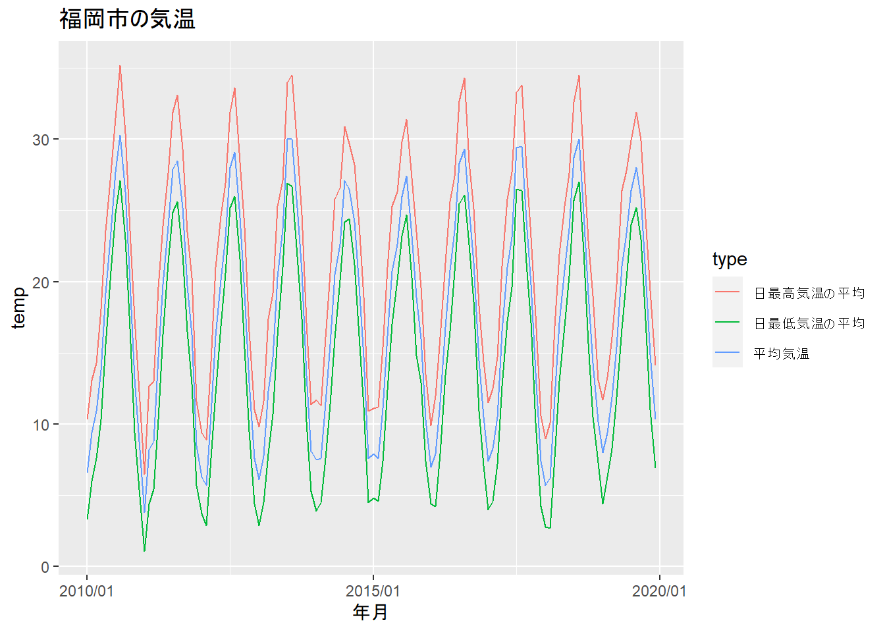

6.5 折れ線グラフ
折れ線グラフは経過時間に伴って変化する量的変数を示すグラフです。ここでは、3つのパターンについて紹介します。
6.5.1 x軸が経過時間、y軸が1つの変数
この場合が折れ線グラフの基本となります。折れ線グラフはgeom_line()関数で描画します。
df_time <- data.frame(t = 1:10, y = rnorm(10))
df_time## t y
## 1 1 -0.8968998610
## 2 2 -1.0694899753
## 3 3 0.4596132904
## 4 4 0.1653248194
## 5 5 -0.3925920830
## 6 6 -0.9209876060
## 7 7 -1.4697084233
## 8 8 -0.3373396796
## 9 9 0.0008732472
## 10 10 1.1997828657ggplot(df_time, aes(t, y)) +
geom_line()
flightsデータの場合に、月ごとの平均遅延時間をプロットするには以下のようにします。
flights %>%
filter(!is.na(arr_delay)) %>%
group_by(month) %>%
summarise(arr_delay = mean(arr_delay), .group = "drop") %>%
ggplot(aes(month, arr_delay)) +
geom_line() +
scale_x_continuous(breaks = 1:12)
最終行のscale_x_continuous()は、x軸の目盛りを設定するためのものです。
6.5.2 x軸が経過時間、y軸が2つ以上の変数
2つ以上の量的変数の時間推移を見たい場合は、geom_line()のaesにおいてgroupを指定します。
df_time <- df_time %>%
mutate(z = rnorm(10))
df_time## t y z
## 1 1 -0.8968998610 0.40969334
## 2 2 -1.0694899753 -0.20176394
## 3 3 0.4596132904 -0.06905431
## 4 4 0.1653248194 -1.89876327
## 5 5 -0.3925920830 -0.95484888
## 6 6 -0.9209876060 -0.52545503
## 7 7 -1.4697084233 -0.02130674
## 8 8 -0.3373396796 -0.34564186
## 9 9 0.0008732472 0.33471754
## 10 10 1.1997828657 -0.15127031変数が異なる列に格納されている（横長データ）の場合、一旦縦長に変形して、列名となっていた変数をgroupに指定します。
df_time %>%
pivot_longer(-t, names_to = "var", values_to ="value") %>%
ggplot(aes(t, value, group = var, color = var)) +
geom_line()
6.5.3 x軸が日付、y軸が2つ以上の変数
以上の例は、x軸は単なる数値でしたが、時間変化のデータの場合、日付であることも多いです。例として以下のようなデータを考えます。
fuk_temp <- read.csv("./data/fukuoka_temp.csv", encoding = "UTF-8")
head(fuk_temp)## 年月 平均気温 日最高気温の平均 日最低気温の平均
## 1 2010/1/1 6.6 10.3 3.3
## 2 2010/2/1 9.4 13.1 6.0
## 3 2010/3/1 10.9 14.3 7.6
## 4 2010/4/1 13.8 18.1 10.3
## 5 2010/5/1 19.2 23.6 15.6
## 6 2010/6/1 23.5 27.6 20.7年月列に文字列として2010/1/1のような形式で日付の情報が格納されています。このままだと、文字列なので正常に折れ線グラフが描画されません。文字列を日付としてのデータ型に変換する場合は、lubridateパッケージのas_date()関数を用います。lubridateパッケージもtidyverseに含まれていますが、ロードは同時にされませんので、パッケージの関数を利用することを明示しておきます。
fuk_temp %>%
pivot_longer(-年月, names_to = "type", values_to = "temp") %>%
mutate(年月 = lubridate::as_date(年月)) %>%
ggplot(aes(年月, temp, group = type, color = type)) +
geom_line() +
scale_x_date(labels = scales::date_format("%Y/%m")) +
labs(title = "福岡市の気温")